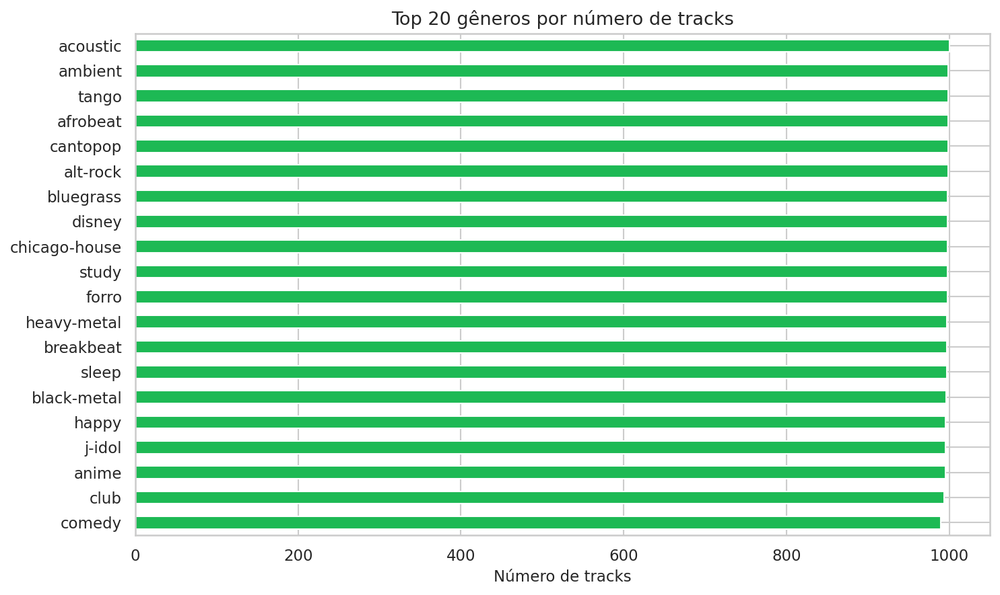
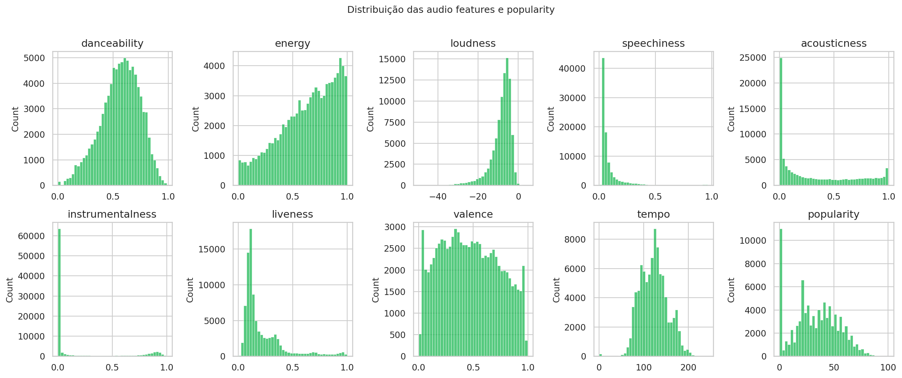
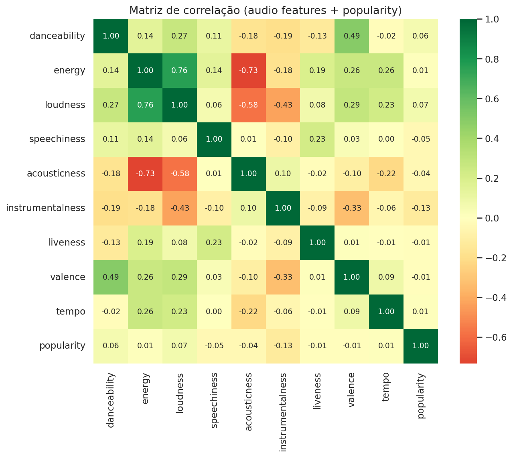
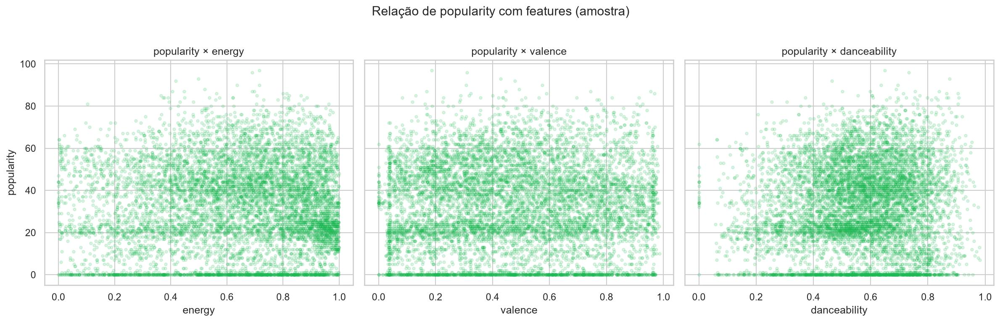
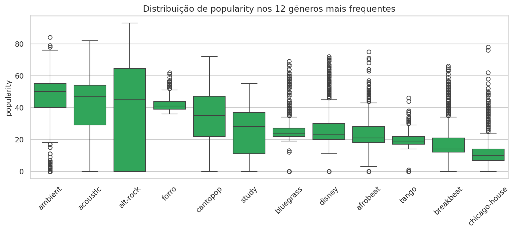

1. Visão geral da base
O CSV original possui 114.000 linhas. A análise remove a coluna de índice exportada (Unnamed: 0, quando presente) e elimina duplicatas com base em track_id, resultando em 89.741 faixas únicas.
As análises abaixo são descritivas e exploratórias: procuram caracterizar a base e identificar relações entre atributos, sem interpretar correlação como causalidade.
Fonte: Kaggle - Spotify Tracks Dataset (também no Hugging Face). Coletado via Spotify Web API. Linhas originais: 114,000. Duplicatas de track_id removidas: 24,259. Valores faltantes: artists: 1, album_name: 1, track_name: 1.
2. Distribuição de gêneros (Top 20)
Contagem de frequência por track_genre com value_counts(), seguida da seleção dos 20 gêneros com maior número de faixas. O gráfico é uma visualização de frequência, não uma medida de preferência dos usuários.
A base cobre muitos gêneros com contagens relativamente equilibradas no topo. Isso é relevante para experimentos de recomendação baseada em conteúdo e para comparações entre gêneros.

3. Distribuições das audio features e popularity
Histogramas com 40 classes (bins) para cada variável numérica selecionada, usando todas as faixas disponíveis após a deduplicação.
Foram analisadas danceability, energy, loudness, speechiness, acousticness, instrumentalness, liveness, valence, tempo e popularity.
Nem todas usam a mesma escala: várias audio features ficam aproximadamente entre 0 e 1; loudness é expresso em dB, tempo em BPM e popularity varia de 0 a 100.

4. Correlação entre features
O notebook usa df[audio_features].corr(). No pandas, o método padrão de DataFrame.corr() é a correlação de Pearson; portanto, a matriz mede a intensidade e a direção da associação linear entre cada par de variáveis.
O coeficiente r varia de -1 a +1: valores positivos indicam associação linear direta, valores negativos indicam associação inversa e valores próximos de zero indicam pouca associação linear.
- Variáveis incluídas:
danceability,energy,loudness,speechiness,acousticness,instrumentalness,liveness,valence,tempoepopularity. popularityfoi incluída apenas para verificar associação descritiva com os atributos; não é uma audio feature nem representa preferência individual.key,modeetime_signaturenão entram na matriz principal. Apesar de aparecerem numericamente na base, tratá-los diretamente como variáveis contínuas pode produzir interpretações inadequadas.- Não é necessário normalizar as escalas antes de calcular Pearson: o coeficiente é invariável a mudanças lineares de escala. Assim, o fato de
loudnessestar em dB e outras features em 0–1 não impede o cálculo.
Limitação: Pearson detecta principalmente relações lineares e pode ser influenciado por distribuições assimétricas e valores extremos. Como verificação de robustez, uma etapa posterior pode comparar estes resultados com a correlação de Spearman.

5. Popularity × energy / valence / danceability
Gráficos de dispersão usando uma amostra aleatória de 8.000 faixas, obtida com random_state=42 para reprodutibilidade. A amostragem é usada apenas para reduzir sobreposição visual; a matriz de correlação da seção anterior usa a base deduplicada completa.
Os gráficos servem como inspeção visual da forma da relação e ajudam a verificar se uma associação linear resumida por Pearson parece plausível.
As relações com popularity aparentam ser fracas no conjunto amplo. Isso deve ser interpretado como associação descritiva, não como evidência de que uma feature cause maior ou menor popularidade.

6. Popularity por gênero (Top 12)
São selecionados os 12 gêneros com maior número de faixas. Para cada gênero, a distribuição de popularity é apresentada por boxplot e os gêneros são ordenados pela mediana de popularidade.
O boxplot resume mediana, quartis e dispersão; diferenças visuais entre gêneros não constituem, por si só, teste de significância estatística.

7. Observações para o TCC
- A base é adequada para experimentos de recomendação baseada em conteúdo com audio features e para análises de similaridade entre tracks/gêneros.
popularityé um score do Spotify (0–100), não um feedback explícito de usuário. Não deve ser tratado como ground-truth de preferência individual.- Há muitos gêneros; para modelos, pode ser necessário agrupar ou filtrar conforme o recorte do problema.
- Features como
instrumentalnessespeechinessapresentam distribuições fortemente assimétricas. Isso importa na escolha de medidas de distância e também motiva comparar Pearson com métodos baseados em postos, como Spearman. - Não há dados de interação usuário–item. Qualquer avaliação de recomendação precisará de estratégia alternativa, como similaridade, hold-out por gênero ou coleta própria.
- A matriz de correlação é uma análise exploratória entre atributos da faixa; ela não demonstra causalidade e não substitui uma avaliação de um sistema de recomendação.